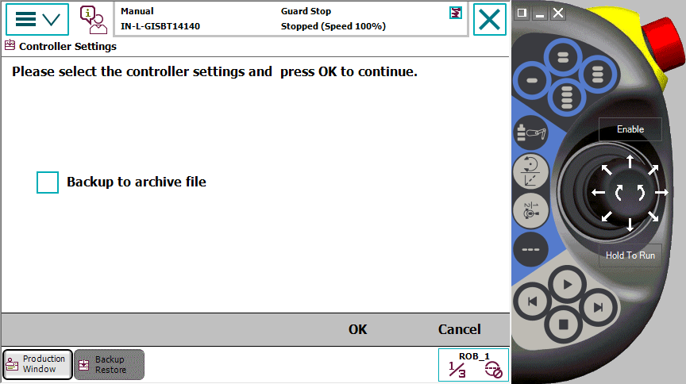

我们建议在以下时间执行备份：
安装新 RobotWare 之前。
对指令和/或参数进行任何重要更改以使其可恢复为先前设置之前。
对指令和/或参数进行任何重要更改并为成功进行新的设置而对新设置进行测试之后。
本节介绍如何备份系统。
操作 | |||
1 | 点击 ABB 菜单，然后点击 Backup and Restore（备份与恢复）。 | ||
2 | 点击 Backup Current System（备份当前系统）。
| ||
3 | 点击高级...。 显示控制器设置窗口。
 | ||
4 | 选择备份到归档文件复选框。 | ||
5 | 点击 OK（确定）。 | ||
6 | 所显示备份路径是否正确？ 如果 YES(是)：点击 备份 以备份选定的目录。备份文件的命名方式取决于创建该文件的当日日期。 如果 NO（否）：点击备份路径右侧的 ... 并选择目录。然后点击 Backup（备份）。备份文件夹的命名方式取决于创建该文件夹的当日日期。 |